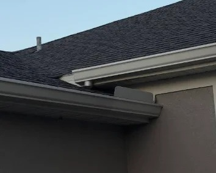

Gutter Cleaning
Palm Coast
Rain, leaves, seed pods, and roof debris can block gutters and stop water from draining properly. Gutter Cleaning Palm Coast helps homeowners keep rainwater moving away from the foundation, driveway, and landscaped areas before heavy weather creates bigger drainage problems.
Our gutter cleaning service removes built up debris, clears visible blockages, and checks the roof drainage system before the work is complete. Regular maintenance helps support proper water flow throughout the year and prepares your home for Florida's changing weather.
Heavy Rain Can Expose Small Drainage Problems
Even a minor blockage can cause water to overflow during periods of heavy rainfall, especially when debris collects along the roofline.
Seasonal Debris Collects Over Time
Leaves, seed pods, small branches, and roof grit can build up after windy weather and reduce the amount of water that moves through the system.
Routine Maintenance Helps Reduce Future Problems
A clear drainage path allows rainwater to move away from your home and supports better protection for the areas around your property.
Gutter Cleaning
Palm Coast, FL
Homes across Palm Coast face year round moisture, coastal humidity, and tree debris that can affect the way rainwater leaves the roof. Without routine maintenance, small blockages may cause overflow and leave excess water around areas that should stay dry.
We understand the conditions that affect homes throughout the city and tailor every visit to those challenges. Each service begins with a careful inspection of the roofline and rainwater system to identify visible concerns before work starts. If we notice anything that deserves your attention, we explain it in clear language so you understand the condition of your home.
Whether your property is close to Washington Oaks Gardens State Park or along Belle Terre Parkway, regular maintenance helps support reliable drainage throughout the year. Our goal is simple: provide dependable Palm Coast gutter cleaning services that help homeowners protect their property with practical maintenance rather than temporary fixes.

Our Services
Professional Gutter Care for Palm Coast Homes
Every home has different drainage needs based on its roof design, surrounding trees, and exposure to Florida weather. We focus on two essential services that help rainwater move away from your home and reduce the chance of overflow throughout the year.
Gutter Cleaning
Leaves, roof grit, small branches, and other outdoor debris can build up over time and restrict water flow. Our gutter cleaning service removes accumulated debris, clears visible blockages, and flushes the system to confirm water moves through each section properly. If we notice signs of wear or a drainage concern during the visit, we'll explain what we found before the work is complete.
Regular maintenance is especially helpful after strong storms and during seasons when nearby trees shed more material onto the roof.
Gutter Guard Installation
Open channels allow debris to collect between maintenance visits. Gutter guard installation creates a protective barrier that helps reduce the amount of material entering the system while allowing rainwater to pass through more efficiently. Many homeowners choose this option to reduce future buildup and make routine maintenance easier.
We help you decide whether a guard system is suitable for your home based on the surrounding trees, roof layout, and existing drainage conditions.
Why Choose Us
Respect for Your Home
We treat your property with care while we work. From the time we arrive until the job is finished, we work carefully and leave the area clean before we leave.
Clear Communication
Our knowledgeable staff takes time to answer your questions, explain what they find, and keep communication simple throughout the job, so you always know the condition of your gutter system.
Careful Work From Start to Finish
Every gutter system is different. We remove built up debris, check that rainwater is flowing properly, and complete quality work throughout the service.
Honest Recommendations
If we notice something that needs your attention, we'll explain it in simple language. We believe in honest work, so you can decide what is best for your home without pressure.
We Leave Your Property Clean
After the work is finished, we remove the debris, complete the cleanup, and leave your property clean before we go.
Focused on Long Term Gutter Care
Regular gutter cleaning helps reduce blockages caused by leaves, pine needles, and other debris. Keeping your gutter system clear helps rainwater move away from your home throughout the year.
DIY vs Professional
While many homeowners consider doing the work themselves, the right choice often depends on safety, time, and the condition of the home's rainwater system.
Do It Yourself
- Set aside part of your weekend for the job.
- Move a ladder around the property to reach each section safely.
- Remove leaves, twigs, roof grit, and other outdoor debris by hand.
- It can be difficult to tell if every section is working correctly after heavy rain.
- Collect and dispose of debris after the work is complete.
- Missed buildup may cause another blockage after the next storm.
Professional Service
- Spend your time on other priorities while the maintenance is completed for you.
- The proper equipment is used to access and inspect accessible areas.
- Built up material is cleared, and the entire drainage route is checked for proper water movement.
- Visible drainage concerns are identified and explained before the visit is finished.
- All removed material is taken from the work area before leaving the property.
- Routine maintenance helps reduce future buildup and supports reliable drainage throughout the year.
See the Difference
Move the slider to compare a blocked drainage channel with a clean one and see how proper maintenance restores normal water flow.
Keep Your Home Ready for Florida's Next Storm
Blocked roof drainage can cause rainwater to overflow when heavy rain arrives. Regular maintenance helps water move away from your home and reduces the chance of moisture collecting where it should not. Whether it has been months since your last service or you have noticed visible overflow, now is a good time to have your system inspected.
Request Your Free Inspection
Have questions about your home or need an estimate? We're here to help. Contact us today to schedule a convenient inspection and learn more about our gutter cleaning service or gutter guard installation.